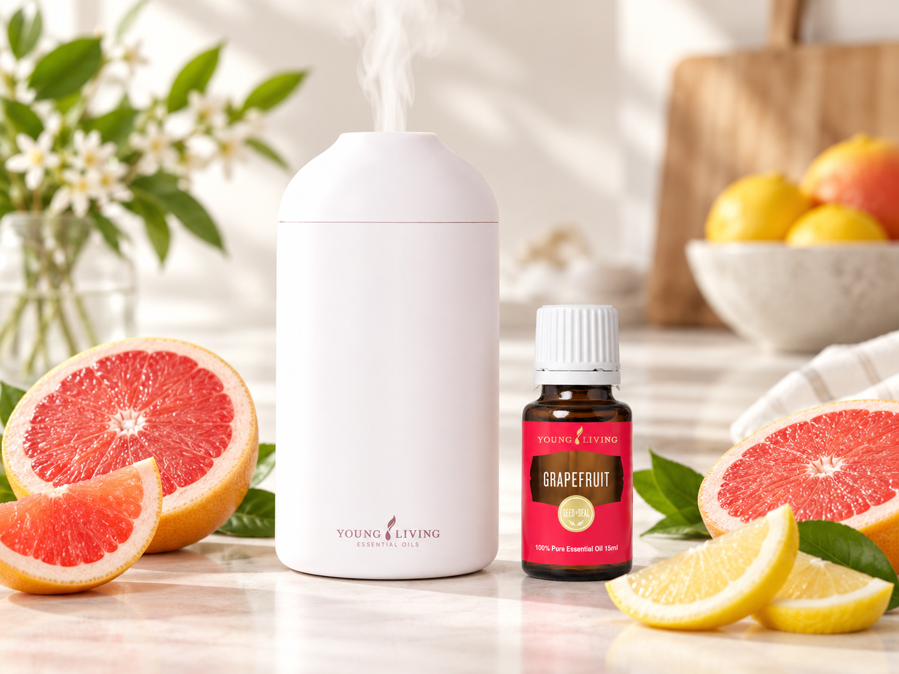

그레이프프루트 에센셜 오일 정보
상큼한 시트러스 향에 은은한 쌉싸름함이 더해지는 것이 특징입니다. 공간에 가볍고 선명한 분위기를 더하고 싶을 때 살펴보기 좋은 오일입니다.
한눈에 보는 정보
향과 분위기
다음 내용은 공식 효능 설명이 아닌 YL Toolkit의 향 선택 가이드입니다.
자몽 껍질을 떠올리게 하는 상큼한 향과 은은한 쌉싸름함이 함께 느껴집니다. 레몬보다 부드럽고 오렌지보다 드라이한 인상을 주며, 페퍼민트와 조합하면 더욱 선명하고 산뜻해집니다.
공식 제품 정보 요약
공식 제품 자료에는 신선한 그레이프프루트 과피를 냉압착해 만든 15ml 싱글 오일로 소개되어 있습니다. 피부 적용 후 햇빛이나 자외선을 피해야 한다는 광민감성 관련 주의사항이 포함되어 있습니다.
생활 속 활용법
그레이프프루트 프레시 디퓨저 블렌드

준비물
- 디퓨저
- 그레이프프루트 에센셜오일 3방울
- 레몬 에센셜오일 1방울
사용 방법
그레이프프루트 3방울과 레몬 1방울을 블렌딩해 사용 중인 디퓨저의 사용 방법과 권장량에 맞춰 디퓨징합니다.
디퓨저 종류에 따라 사용 방법이 다를 수 있으므로 사용하는 기기의 설명서를 확인하세요.
향의 느낌
그레이프프루트의 상큼하면서 살짝 쌉싸름한 시트러스 향에 레몬의 밝은 향을 더한 산뜻한 조합입니다.
한 번 비교해보세요
먼저 그레이프프루트만 사용하고, 다음에는 레몬을 한 방울 추가해 블렌딩 전후의 향 차이를 비교해보세요.
사용 전 확인
눈과 점막 접촉을 피하세요. 피부에 사용하는 경우에는 제품의 광민감성 관련 주의사항을 확인하세요.
더 활용해보기
- 페퍼민트와 조합
선명한 민트 향을 더해 더욱 상쾌하고 또렷한 향 구성을 만들 수 있습니다. - 라벤더와 조합
부드러운 플로럴 향을 더해 자몽의 쌉싸름한 인상을 둥글게 정리할 수 있습니다. - 희석량 확인
피부 적용 전 제품 라벨과 희석 계산기를 함께 확인하세요. - 제작비 확인
DIY 방향 제품이나 소분 제작 전 실제 사용량 기준 원가를 계산하세요.
잘 어울리는 오일
페퍼민트 에센셜 오일 →
페퍼민트와 함께 사용하면 그레이프프루트의 상큼하고 은은한 쌉싸름함에 시원한 민트 향이 더해져 선명한 향 구성을 만들기 쉽습니다.
안전 및 주의사항
- 구매한 제품의 국내 표시사항과 사용법을 우선하세요.
- 눈, 귀, 점막 등 민감한 부위와의 접촉을 피하고 어린이의 손이 닿지 않는 곳에 보관하세요.
- 피부에 사용할 때는 민감도와 라벨 안내를 확인하고, 필요한 경우 충분히 희석한 뒤 작은 부위에서 먼저 확인하세요.
- 피부에 적용한 뒤에는 제품 라벨에서 안내하는 시간 동안 직사광선과 자외선 노출을 피하세요.
- 임신·수유 중이거나 약을 복용 중이거나 치료 중이라면 사용 전 전문가와 제품 라벨을 확인하세요.
사용자의 연령, 피부 상태, 건강 상태와 제품별 라벨에 따라 적절한 사용 방식이 달라질 수 있습니다.
가격과 PV 확인
데이터 기준일과 공통 구매 안내는 제품 정보센터에서 확인하세요. 실제 주문 화면의 가격·PV를 최종 기준으로 합니다.
계산기로 이어서 확인하기
현금·포인트 비교
1PV당 제품가치와 비교 기준을 확인한 뒤 공식 주문 조건과 함께 판단하세요.
그레이프프루트 제품 FAQ
그레이프프루트는 어떤 향인가요?
상큼한 시트러스 향에 자몽 껍질 같은 은은한 쌉싸름함이 더해진 향입니다.
어떤 오일과 잘 어울리나요?
페퍼민트, 라벤더, 레몬처럼 민트·플로럴·시트러스 계열과 조합하기 좋습니다.
광민감성 주의가 필요한가요?
공식 자료에는 피부 적용 후 햇빛이나 자외선을 피하라는 안내가 있습니다. 국내 제품 라벨을 우선하세요.
피부에 바로 사용할 수 있나요?
제품 라벨의 희석 안내를 확인하고 작은 부위에서 먼저 확인하는 것이 안전합니다.
제품별 공식 출처
공식 자료 확인일: 2026-08-04 · 가격·PV 데이터 기준일: 2026-09-04
공통 안전 원칙은 제품 정보센터 이용 전 확인사항을 참고하고, 이 제품의 공식 자료와 국내 라벨을 최종 확인하세요.